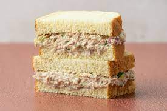

Tuna Sandwich

Description
The Tuna Sandwich is my favorite sandwich for when I am most lazy. This recipe will show you how I make the Tuna Sandwich but keep in mind that a lot of the ingredients are able to be removed or swapped with prefference. This recipe will use youre choice of bread, canned tunafish, mayo, pickles, mustard, lemon juice.
Ingredients
- Bread
- Tunafish
- Mayo
- Pickles
- Lemon juice
- Mustard
- Salt and Pepper
Steps
- Get Tunafish, bread, mayo, lemon juice, pickles, mustard, and salt and pepper, set on counter.
- Cut pickles into small cubes.
- Open Tunafish can and add to mixing bowl.
- add 1/2 cup of mayo to mixing bowl.
- Add pickles.
- Add 2 tbsp of Mustard.
- Add 2 tsp of lemon juice.
- Mix well
- Add salt and pepper to taste, mix again.
- Apply to bread and enjoy!